It has been accumulating for roughly nineteen centuries.
SAINT JUDE'S LANDING
THIS PLACE
IS FUCKED.
Ancient. Crowded. Industrial. Layered. Difficult to control. Still inhabited. Still changing. Still accumulating shit.
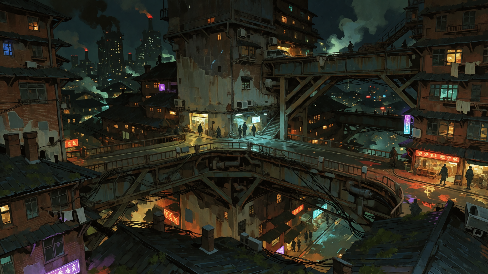
01
DO NOT READ THIS LIKE A TOURIST BROCHURE.
Seriously. This is not some cute little destination city where everything has a charming historical plaque and somebody sells you a postcard.
SJL is roughly 1,900 years old and nobody ever successfully stopped people from building shit on top of other shit.
Saint Jude's Landing started with a wooden dock, some storage structures, several houses, a rough road inland, and freshwater.
Then people kept showing up.
Somebody built beside the houses. Somebody else built above that. Somebody dug underneath it. Roads got buried. Foundations became basements. Basements became tunnels. Businesses moved into old buildings. New infrastructure got shoved into old infrastructure. People kept finding ways to make another floor happen.
NOBODY DESIGNED THIS PLACE.
It just kept happening.
That's basically the whole city.
THE CITY IS NOT
A SETTING.
IT'S A CITY.
People live here. They work here. They raise kids here. They run stores. They go to school. They fall in love. They get divorced. They make art. They get drunk. They start businesses. They lose jobs. They commit crimes. They gossip. They go home.
Most people are not standing around waiting for the next supernatural disaster to happen. Most people are just trying to get through Tuesday.
Horror exists inside ordinary life. It doesn't replace it.
SJL WORKS BECAUSE PEOPLE KEEP MAKING IT WORK.
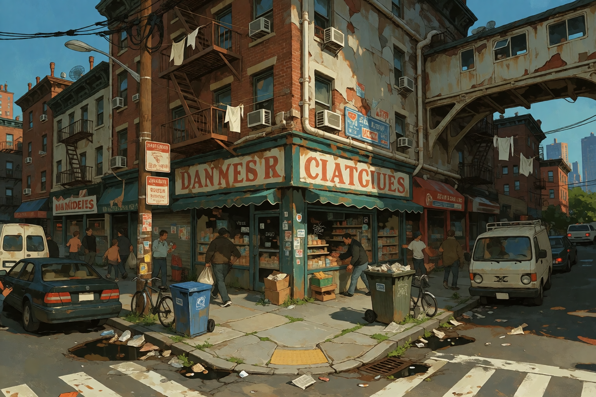
There isn't one reliable ground level anymore.
The government exists. So do corporations, factories, unions, families, gangs, landlords, private security, smugglers, religious groups, wealthy people, and whoever owns the building you're currently standing in.
There is no complete map. There has never been a complete map.
HOW THE FUCK DID WE GET HERE
HISTORY
Everything has a reason. Most of those reasons have been forgotten.
~1900 YEARS AGO
THE LANDING
Wooden dock. Storage. Several houses. Rough inland road. Freshwater.
That's basically it.
It was useful, so people stayed.
EARLY CENTURIES
EVERYBODY STARTED TRADING SHIT
Fish, salt, grain, leather, metal, tools, manufactured goods, stolen goods, smuggled goods, illegal goods, things that technically belonged to somebody else, and things nobody wanted to admit existed.
The Landing kept growing because trade kept giving people a reason to stay.
~1100 YEARS AGO
THE FIRST BEHEMOTH
A Behemoth carcass washes ashore.
It is bigger than the settlement.
The bones are unusually dense. The hide resists fire. The blood contaminates the surrounding land for years.
People harvest everything.
At first the material is useful.
Then it's valuable.
Then somebody figures out how much money can be made from it.
And now we're here.
FOLLOWING CENTURIES
WELL, THAT ESCALATED
Behemoth-derived materials become construction materials, tools, fuel, chemicals, manufactured goods, recreational substances, and commercial products.
The city grows around the industry while the industry grows around the city.
Eventually the two are basically impossible to separate.
INDUSTRIAL AGE → PRESENT
EVERYTHING KEEPS GOING WRONG
- Factory explosions
- Chemical spills
- Power failures
- Labor riots
- Gang wars
- Fires
- Structural collapses
- Disease outbreaks
- Containment failures
- Financial crashes
- Missing shipments
- Missing people
- Missing buildings
And somehow the city is still here.
CURRENT
EVERYBODY ELSE GAVE UP
Outside governments eventually decided Saint Jude's Landing was too expensive, too complicated, too entrenched, and still too useful to dismantle.
So the practical solution was to leave it alone.
Nobody is coming to fix it.
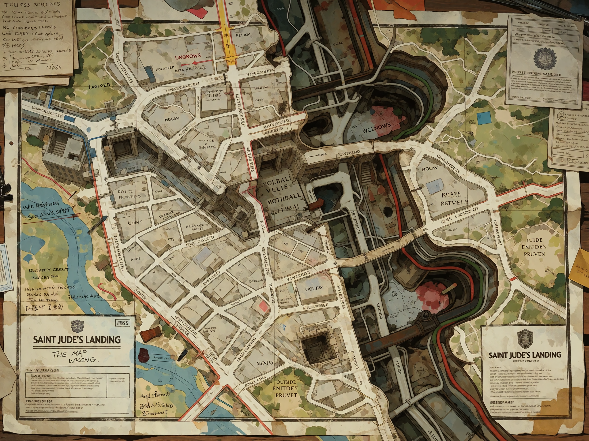
UP / DOWN / SOMEWHERE ELSE
THERE IS NO SINGLE GROUND FLOOR.
Streets connect to tunnels. Shops have buildings above and below them. Buildings have rooms that don't line up with the rooms underneath them. Districts disappear and reappear.
Local knowledge matters more than maps.
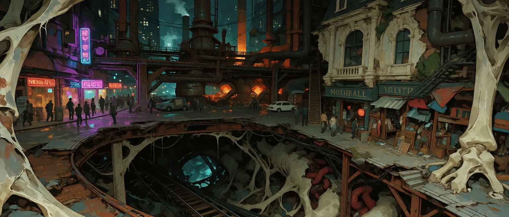
+03
ABOVE
Elevated walkways, bridges, rooftops, suspended platforms, external stairs, upper markets, service corridors.
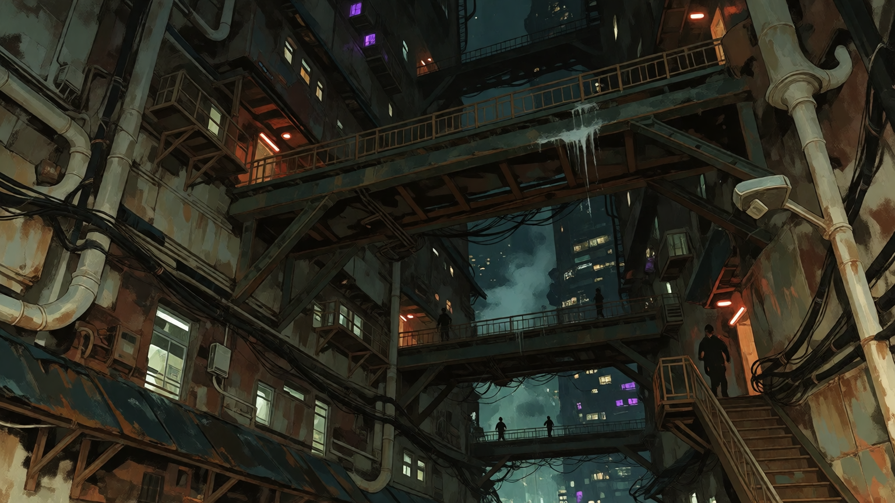
00
SURFACE
Current street level.
“Current” is doing a lot of fucking work here.
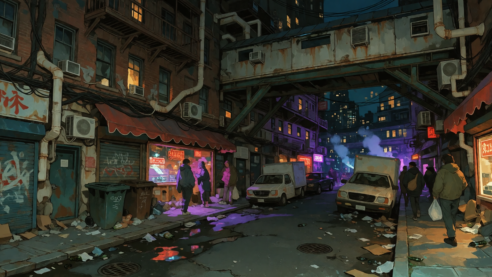
-01
BELOW
Ancient foundations, buried roads, drainage, basements, utility tunnels, industrial infrastructure.

???
WHO FUCKING KNOWS
Buried structures. Forgotten rooms. Unidentified remains. Contradictory records. Tunnels nobody has officially admitted exist.
It's coming. Or it isn't. Gimme a sec.

IF YOU HEAR SOMETHING MOVING BELOW YOU—
Do not assume it is a pipe.
THE THINGS THAT BUILT HALF THIS SHIT
BEHEMOTHS
Nobody agrees what they are.
Some look like animals. Some don't. Some decay normally. Some don't. Some are found dead. Some are found alive. Some keep moving after they're dead.
YEAH.


WHAT THEY'RE MADE OF
Bone. Teeth. Hide. Blood. Organs. Claws. Glands. Other tissue. Whatever else people can figure out how to use.
WHAT PEOPLE DO WITH IT
Construction materials. Tools. Fuel. Chemicals. Manufactured goods. Recreational substances. Commercial products.
THE WHOLE PROBLEM
SJL BUILT AN ENTIRE INDUSTRIAL ECONOMY AROUND CREATURES THAT DON'T FOLLOW THE RULES.
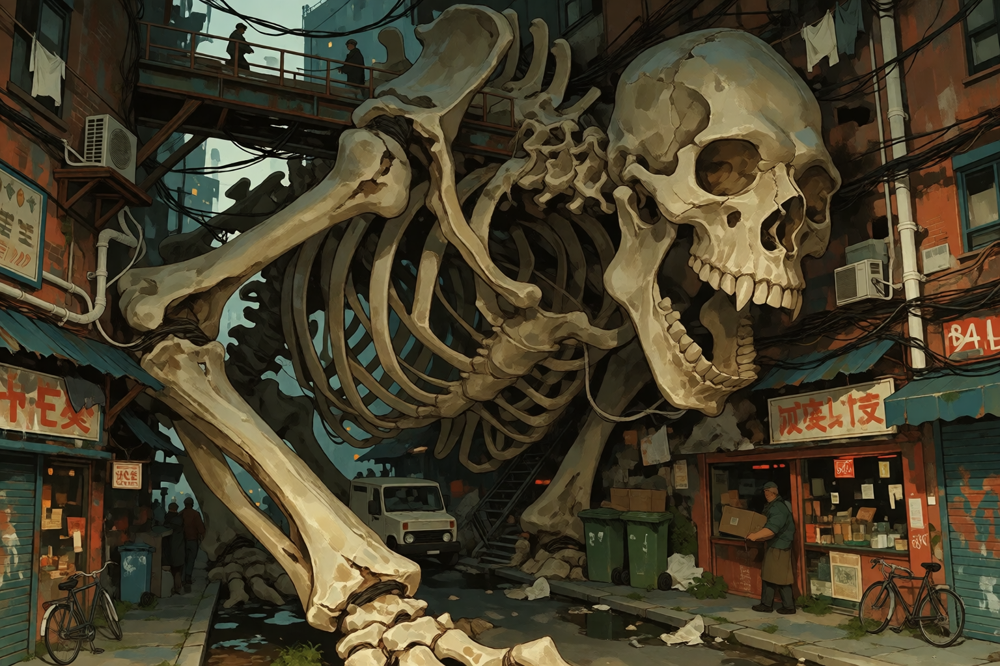
WHERE THE FUCK ARE WE
PLACES
Four actual districts. One enclave. One outside community.
MOTHBALL IS NOT A DISTRICT.
01
DISTRICT
THE NEON GUT
Vertical underbelly. Commerce, entertainment, smuggling, cheap housing, street economies, illegal businesses, shitty clubs, dive bars, 24-hour convenience stores, and enough adrenaline to make sleep feel optional.
STRONG CONNECTION
AMMONIA / RIOT / MOLD
GO THERE →
02
DISTRICT
THE HOLLOWS
Old residential territory that got abandoned, neglected, subdivided, forgotten, and eventually reclaimed. Old houses. Broken windows. Overgrown yards. Fog. Privacy. Something watching you from somewhere you can't see.
ORIGIN
TANSY
GO THERE →
03
DISTRICT
NINE
Factories, processing plants, warehouses, transport systems, foundries, chemical facilities, worker housing, and machinery large enough to make people look temporary.
ORIGIN
BENOIT
GO THERE →
04
DISTRICT
VELVET
Old wealth that never disappeared. Mansions, institutions, estates, inherited properties, expensive buildings nobody can properly maintain, mold, damp stone, expensive carpets, spiderwebbed chandeliers, and cosmic wrongness wrapped in lace.
STRONG CONNECTION
DOLL / MOTHBALL
GO THERE →
—
ENCLAVE INSIDE VELVET
MOTHBALL
Narrow storefronts, cramped alleys, upper floors packed with inventory, storage basements, salvage, repair, thrift, curios, collectors, family heirlooms, stolen goods, Behemoth materials, and objects nobody can identify.
NOT A DISTRICT
DOLL / MIDGE
INSIDE VELVET →
—
OUTSIDE SJL
PUGAD
A small rural community surrounded by wild lands with self-sufficient infrastructure, homes, businesses, routines, generations of people, and teenagers who keep going into SJL and bringing its music, fashion, food, technology, gossip, and trends back home.
NOT A DISTRICT
CHECHE
OUTSIDE SJL →
MOTHBALL IS NOT A DISTRICT.
PUGAD IS NOT A DISTRICT.
THERE ARE FOUR ACTUAL DISTRICTS.
PLEASE STOP MAKING THE MAP WORSE.
THE WEIRDOS
THE OUTLIERS
A loose found-family of wandering weirdos from different corners of Saint Jude's Landing and beyond.
The Outliers started with Ammonia.
She's a legendary graffiti artist who travels all over Saint Jude's Landing making murals. Along the way she finds other weirdos who decide to come with her and eventually become part of the same loose family.
Not everybody is always around. Some live at home. Some wander somewhere else. Some spend time in another district. Some disappear for a while.
They don't have a permanent home. They have bunkers, tunnels, abandoned rooms, inns, apartments, rooftops, hideouts, and other places scattered throughout the city.
They also do illegal shit.
So does literally everybody else in Saint Jude's Landing.
OUTLIER IS A SOCIAL IDENTITY.
It is not a criminal classification, a formal organization, a business, a gang, or some bullshit with membership cards.

NEON GUT
AMMONIA
BAT DEMI-HUMAN
MOTHBALL
DOLL
MOUSE DEMI-HUMAN

NINE
BENOIT
GATOR DEMI-HUMAN

NEON GUT
RIOT
HUMAN
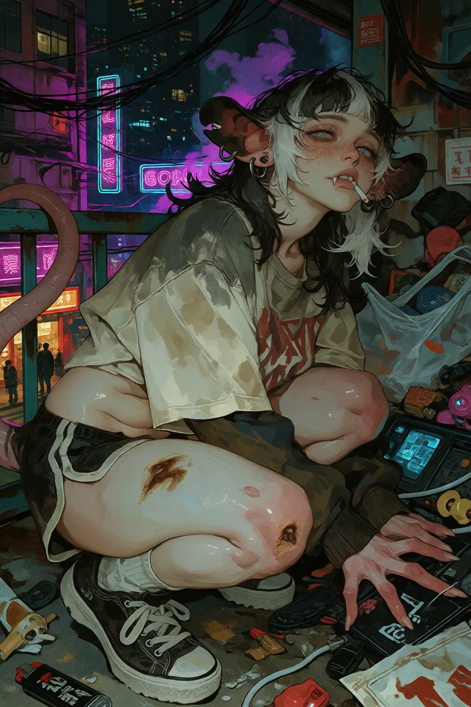
NEON GUT
MOLD
OPOSSUM DEMI-HUMAN
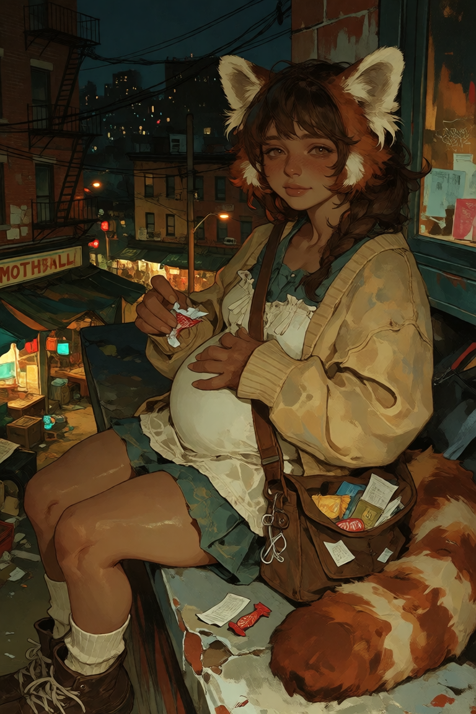
MOTHBALL
MIDGE
RED PANDA DEMI-HUMAN
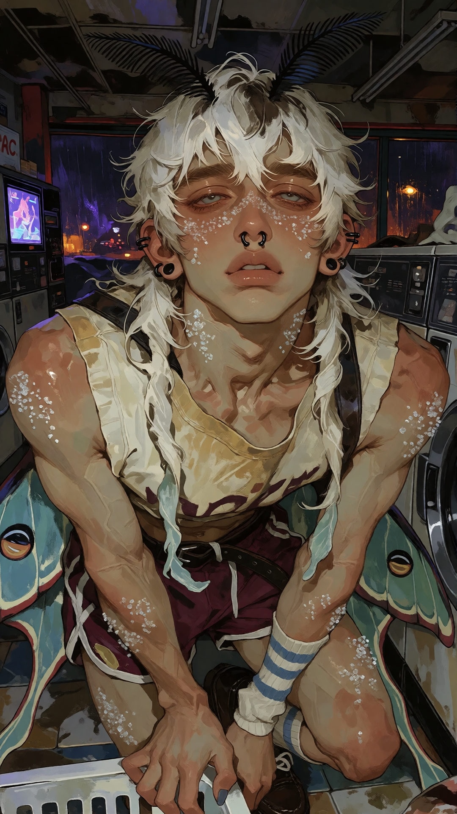
HOLLOWS
TANSY
MOTH DEMI-HUMAN
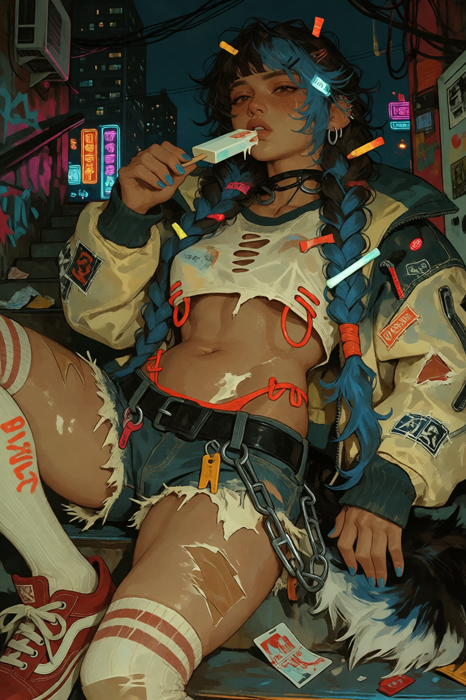
PUGAD
CHECHE
SKUNK DEMI-HUMAN
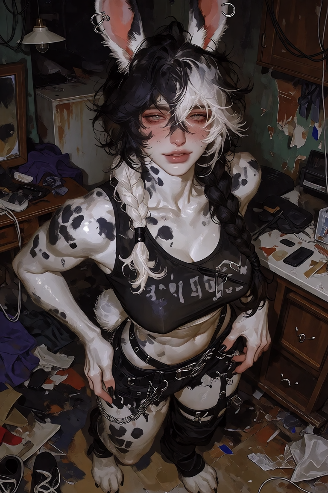
UNKNOWN
BRAT
HARLEQUIN RABBIT DEMI-HUMAN
UNKNOWN
BABY
HARLEQUIN RABBIT DEMI-HUMAN
MISCELLANEOUS SHIT
FIELD NOTES
Things that matter even though they don't fit neatly anywhere.
There is no complete map.
Nobody designed this place.
Everything has a reason. Most of those reasons have been forgotten.
The map is wrong.
People are the city.
If you hear something moving below you, do not assume it is a pipe.
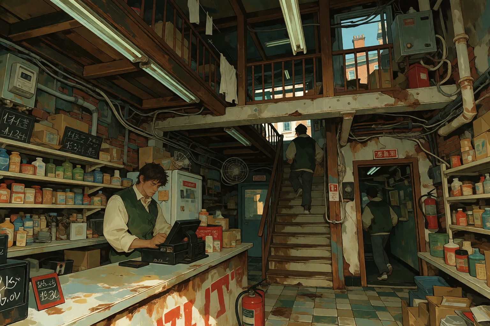